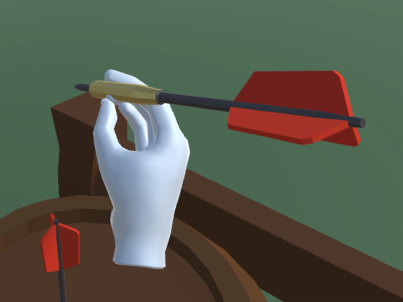
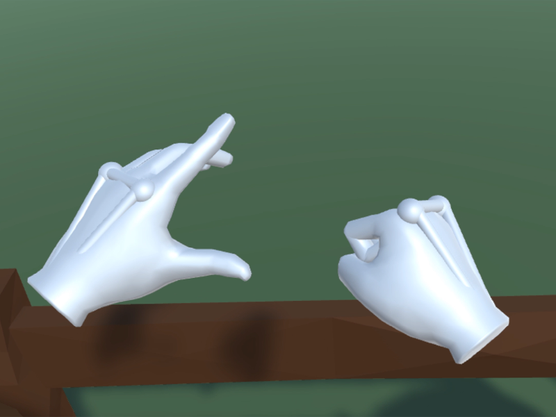
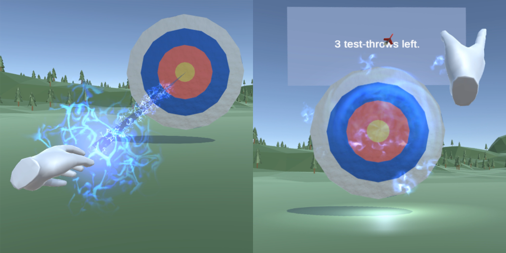

Enhancing Presence
Enhancing players' presence
through narrative engagement
MaStEr's tHeSiS at Ulm University
Premise
Is there a way to increase the feeling of being in virtual environment by enhancing the experience with story elements? To test this concept I created a small game of throwing darts. With the content of virtual environments being on a spectrum of realistic to fantasy, the game consisted of different versions of throwing darts. Some more realistic, come completely in the realm of fantasy. Each of these scenarios were presented to two different groups. One group got normal instructions on how to use the different throwing modes. The other group was presented with a background story to each mechanism.
Challenges
- Create a robust and comfortable user study
- Avoid boring tasks (the questionnaires are boring enough)
- Gather all relevant measurements for analysis
scenarios
The Normal Scenario - No enhancements whatsoever. The player has to throw the dart using their own effort. Grabbing and releasing with the trigger of the Oculus controller. Every scenario has the same given time to complete. Additionally the three scenarios are randomly presented a competitive version. The competitive version aims to put pressure on the player by showing the time counting down as well as a scoreboard with the current player score as well as scores of other players.
The Enhanced Scenario - The virtual player wears some sort of exo-skeleton, which gives its wearer super human strength. The darts will fly faster. In the normal scenario the velocity of the hand during the throwing motion is transferred to the dart. In the enhanced scenario this throwing velocity is multiplied by a factor first and then transferred. This makes the darts much more easy to throw and thus much more accurate.
The Magical Scenario - This is the most unrealistic scenario. The player is able to place a magical black hole on the target. The black hole then has to be charged by making a winding motion with the throwing hand. The more charge the more will the thrown dart be attracted by the black hole. With a full charge the dart will be sucked perfectly into the center of the black hole, making missing the center of the target impossible. Oh and if that's not enough, the darts also spawn in your hand!
How to create a black hole — Or you can skip the math!
If you're interested in how the black hole is attracting its objects, here we go: Unity 3D itself has gravity and force built into its engine. So if you throw objects they behave more or less the same as in real life. So the actual attraction is left to implement.
For the attraction of the magical black hole and the thrown object I used three different stages with different methods of attraction. The basic method was Isaac Newton's Law of Universal Gravitation. The force F of two objects attracting each other can be calculated by \[F=G\cdot \frac{m_{1}\cdot m_{2}}{r^2}\] The problem with this equation is, that the fraction will strive towards infinity due to \(r^2\) (distance between the attracting objects squared) approaching zero. So the closer the two objects get to each other, the higher the attracting force will get. This leads to a huge problem with Unity. The speed of the thrown object is so fast that it basically flies through the target. It is only registered shortly before impact and then way behind the supposed impact. It completely misses the invisible bounding box of the target that usually listens for collisions.
So how can we prevent creating new galaxies?
To remove unnessesary acceleration when the objects are close to each other, we change to a different type of attraction. The acceleration of the black hole was enough, so we focus on steering the object towards the black hole. If the objects comes within a certain range of the black hole we interpolate the direction of the flying object and the direction from object to center of the black hole over the distance between them. This sounds complicated but it is just a bending of the trajectory of the flying object towards the black hole. And this has to happen within the time the object gets within the set perimeter of the black hole and finally hitting the center of it.
This is the calculation of the new direction' for the flying object:
Vector3 targetVelocity = Vector3.Slerp(velocity.normalized, (direction).normalized, 1 - (distance / attractionRadius));
Which basically says: give me a direction which is between FROM and TOWARDS which has progressed towards our goal THIS much.
This second method makes sure that if the dart comes within the vicinity of the black hole it will get sucked in every time. And to make perfectly sure we are not messing with the dart after it collides with the target we turn off any extra manipulation just before impact.
With those three stages the dart will always hit the target if the black hole is charged enough.
//Gravitational constant, not to confuse with the gravity of Earth (g)
const float G = 66.74f;
public float attractionRadius = 10f;
void Attract(Attractor objToAttract)
{
Vector3 direction = transform.position - objToAttract.transform.position;
float distance = direction.magnitude;
//if we are super close we're on the home stretch, no attraction needed
if (distance < 0.3f)
{
return;
}
//if we are close we change to a self guiding mode
if (distance < attractionRadius)
{
//use homing as attraction mode.
Vector3 velocity = objToAttract.GetComponent().velocity;
Vector3 targetVelocity = Vector3.Slerp(velocity.normalized, (direction).normalized, 1 - (distance / attractionRadius));
objToAttract.GetComponent().velocity = targetVelocity * velocity.magnitude;
return;
}
//for any other distance attract the thrown object by gravity
else
{
//use mass and gravity as attraction mode
//force magnitude calculated by G * (m1 * m2) / dist^2
float forceMagnitude = G * (mass * objToAttract.mass) / Mathf.Pow(distance, 2);
Vector3 force = direction.normalized * Mathf.Clamp(forceMagnitude, 0f, 1000f);
//Forces with direction and magnitude can be added to objects, altering its trajectory
objToAttract.GetComponent().AddForce(force);
}
}
All in one study
Putting on the VR headset as well as the controllers is a time consuming task. Especially if participants are unfamiliar with VR headsets. Having to answer six questionnaires was a huge obstacle. I created a simple VR Questionnaire that's easy to reuse. This setup has numerous advantages:
- Saves time during VR study
- Easy to learn
- Textual or pictoral questionnaires possible
- No question is skippable
- More fun during boring and repeating questionnaires
Impressions of the user study
For testing purposes I recorded some personal runs of the study. This video shows some short clips of these runs. Originally these recordings were not meant to be shown anywhere, hence no recording of the in-game audio.